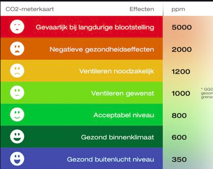
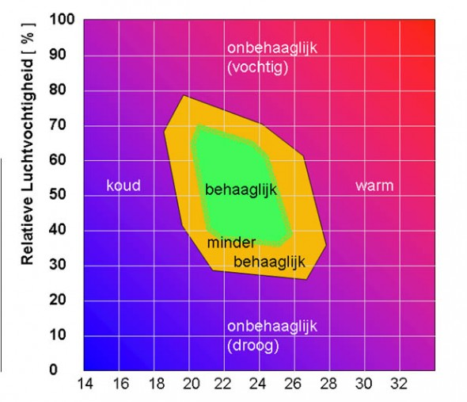

zondag 2 juni 2024
Ventilatie is nodig om vocht en (giftige) gassen die wij, meubels, stoffering, bouwmaterialen uitstoten te vervangen door verse lucht. Omdat personen een bekende hoeveelheid CO2 uitstoten (afhankelijk van de fysieke inspanning), is het meten van de CO2 een goede manier om de totale luchtkwaliteit in huis te bepalen.
De meningen zijn enigszins verdeeld, maar een maximale CO2-waarde van 1100 ppm wordt in het algemeen als een goede ventilatie gezien.
In het algemeen blijft dan ook de vochtigheid op orde.
Een te hoge ventilatie kost niet alleen veel energie, maar kan met name in de winter voor te droge lucht zorgen. | 
|
Naast CO2 zijn relatieve luchtvochtigheid (RH), de concentratie vluchtige Organische Componenten (VOC) en de Fijnstof (PM1) goede indicatoren voor de kwaliteit van het binnenmilieu.
ToDo | 
|
Het energieverlies als gevolg van noodzakelijke ventilatie wordt vaak onderschat.
De standaard centrale afzuiging (die in vele huizen vanaf de jaren 80 is geplaatst) met 3 standen is bedoeld om als volgt te gebruiken:
Het gasverbruik van de ventilatie is dan ongeveer als volgt:
230 m3 gas/jaar in stand-1
470 m3 gas/jaar in stand-2
700 m3 gas/jaar in stand-3
350 m3 gas/jaar als 12 uur in stand-1 en 12 uur in stand-2
Pas je ventilatie met WarmteTerugWinning (WTW) toe dan kun je tot wel 90% van dit energieverbruik voorkomen.
Goede CO2 meters zijn niet goedkoop.
Voor gebruik door leken, adviseren wij eigenlijk alleen de Aranet 4 aan.
Een redelijk geprijsde goede CO2 meter (NDIR meetprincipe en dat moet je echt hebben) is de WL1025, die helaas wel een automatische kalibratie heeft en gevoed moet worden uit een USB adapter.
Bijv:
https://technolinestore.com/en/products/luchtkwaliteit-meter-co2-meter-1
De enige batterij gevoede CO2 meter bij ons bekend is de aanzienlijk duurdere Aranet-4 Home:
https://shop.aranet.com/europe/product/aranet4-home
(wel even controleren of de automatische kalibratie uit staat)
Degene die wij gebruiken is ook goed maar heeft een externe voeding nodig, bijv. https://www.airsain.nl/co2-meter-tfa-airco2ntrol-5000/
(wel even controleren of de automatische kalibratie uit staat)
Een aantal EnergieCoaches beschikt over een CO2 meter en kan daarmee tijdens een bezoek een ruwe indruk geven over de kwaliteit van de ventilatie.
EnergieCafe Mook en Middelaar.